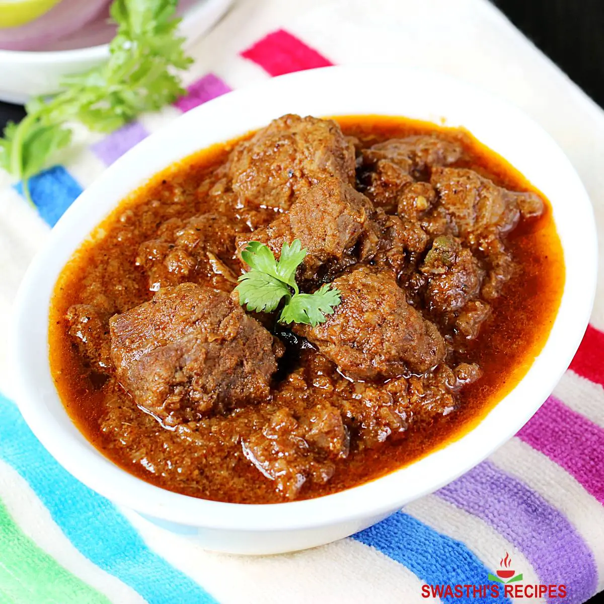

MUTTON CURRY

Incredients
- 1 kg mutton, cleaned and cut into pieces
- 2 large onions, finely chopped
- 2 large tomatoes, chopped
- 1/4 cup oil
- 1/2 cup yogurt
- 1 tablespoon ginger-garlic paste
- 1 teaspoon turmeric powder
- 2 teaspoons red chili powder
- 1 tablespoon coriander powder
- 1 teaspoon cumin powder
- 1 teaspoon garam masala
- 2-3 green chilies, slit
- A handful of fresh coriander leaves, chopped
- Salt to taste
- Water as needed
Directions
- Step 1: Marinate the Mutton
- In a bowl, mix mutton pieces with yogurt, ginger-garlic paste, turmeric powder, red chili powder, coriander powder, cumin powder, and salt.
- Allow the mutton to marinate for at least 30 minutes or refrigerate for a few hours for better flavor.
- Step 2: Sauté Onions
- In a large pot, heat oil over medium heat.
- Add chopped onions and sauté until golden brown.
- Step 3: Cook Tomatoes
- Add chopped tomatoes to the pot and cook until they become soft and the oil starts to separate from the masala.
- Step 4: Add Marinated Mutton
- Transfer the marinated mutton to the pot and cook for a few minutes until the spices coat the meat.
- Step 5: Simmer with Spices
- Add turmeric powder, red chili powder, coriander powder, cumin powder, garam masala, and slit green chilies.
- Cook for a few minutes, stirring occasionally.
- Step 6: Add Water and Cook
- Pour enough water to cover the mutton and bring it to a boil.
- Reduce the heat to low, cover the pot, and simmer until the mutton is tender. This may take about 1.5 to 2 hours.
- Step 7: Garnish and Serve
- Once the mutton is cooked and the gravy is thickened, garnish with fresh coriander leaves.
- Serve hot with rice, naan, or roti.